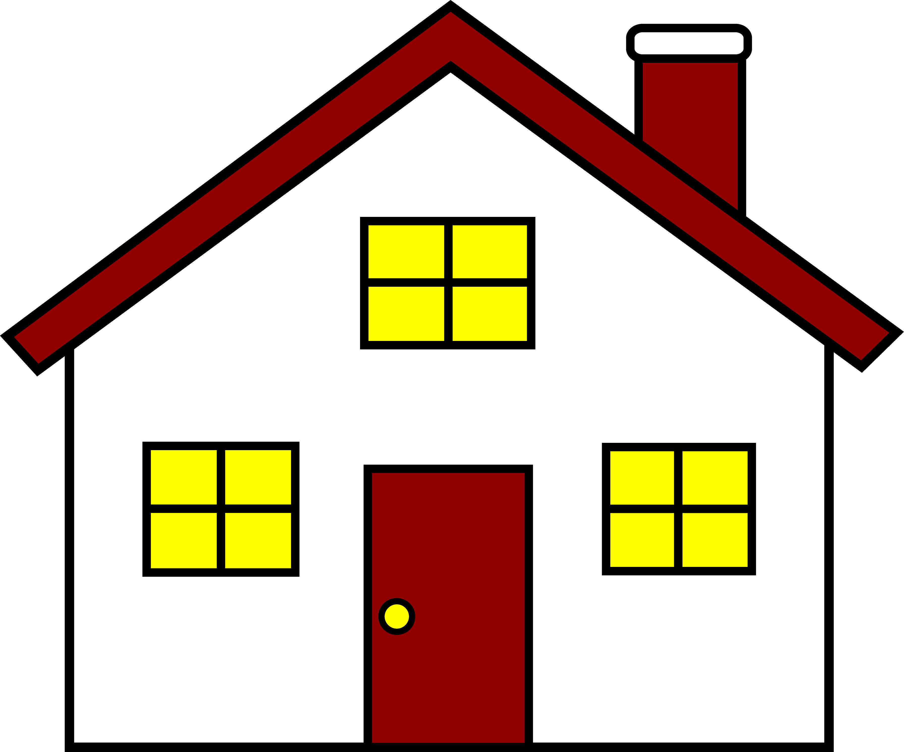
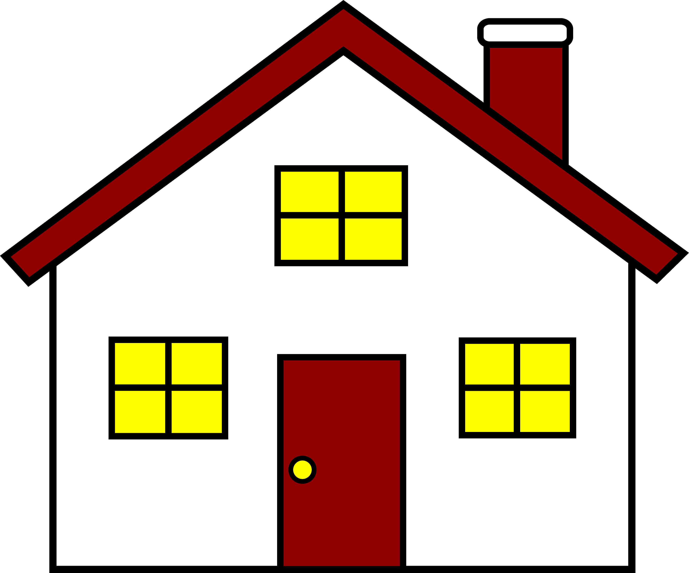
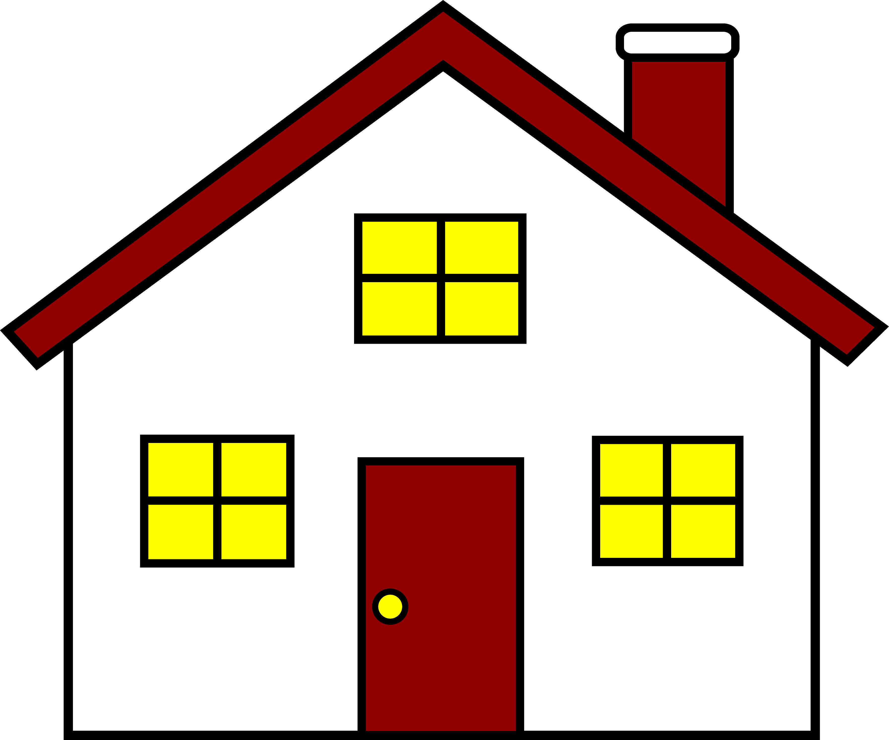

Click to throw the ball. Click on the mouse that has caught the cheese. Click again to reset.
You have 15 chances to guess. Each correct guess gives you a point, which will be tallied in the bottom left hand corner of the screen.
{% endblock %} {% block gamefield %}
